Коледж інформаційних технологій (м. Самбір)
Роки навчання: – (навчалася тут протягом 10-11 класів, що відповідало першому-другому курсам коледжу).
Посилання на заклад: Самбірський фаховий коледж економіки та інформаційних технологій.
Привіт! Я Марічка, студентка спеціальності Прикладна математика. Це моє персональне портфоліо!
Електронна пошта: mariia.stets@lnu.edu.ua
Телефон: +380685808881
Навчальний заклад: Середня школа у місті Судова Вишня,Львівської області.
Роки навчання: – (з 1 по 9 клас).
Цей період запам'ятався міцною базою знань, друзями та першими успіхами в точних науках.
Роки навчання: – (навчалася тут протягом 10-11 класів, що відповідало першому-другому курсам коледжу).
Посилання на заклад: Самбірський фаховий коледж економіки та інформаційних технологій.
Спеціальність: Прикладна математика.
Курс: Третій курс .
Улюблені дисципліни: дискретна математика та бази даних.
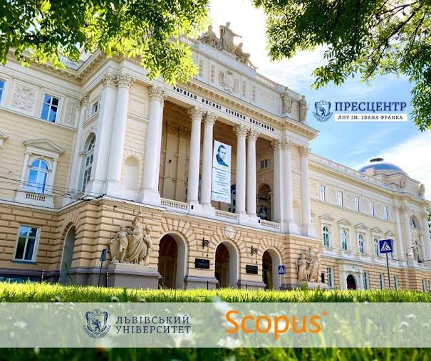
Мій технічний стек та рівень володіння інструментами:
Те, чим я наповнюю свій вільний час:
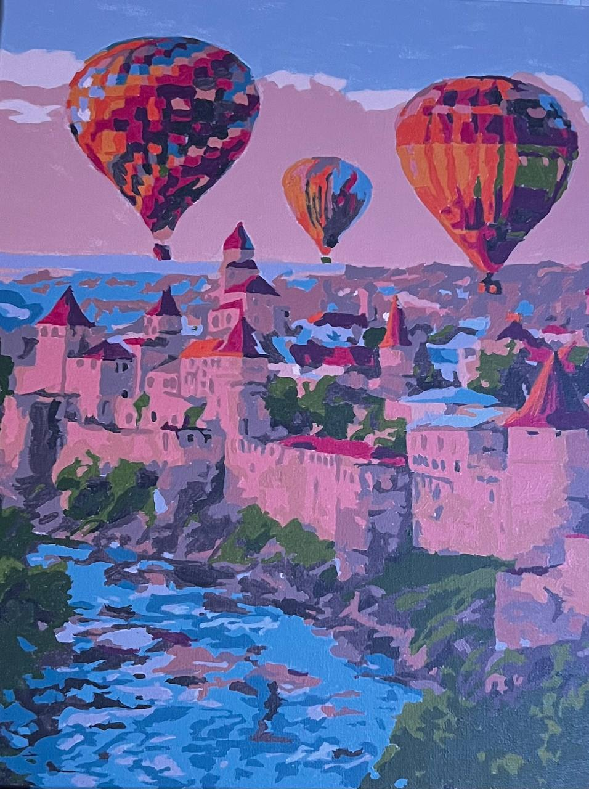
Чудовий спосіб розслабитися, зосередитися та створити гарну картину власними руками.
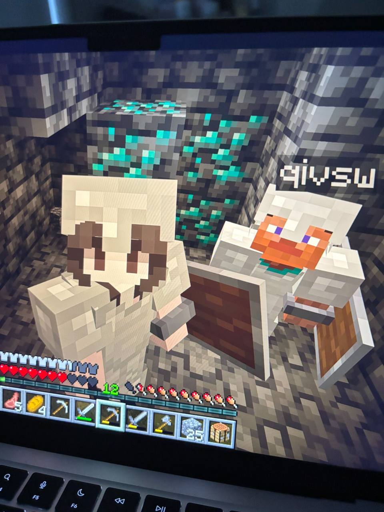
Граю в multiplayer-режимі з близькими, налаштовуючи сервери та створюючи віртуальні світи.
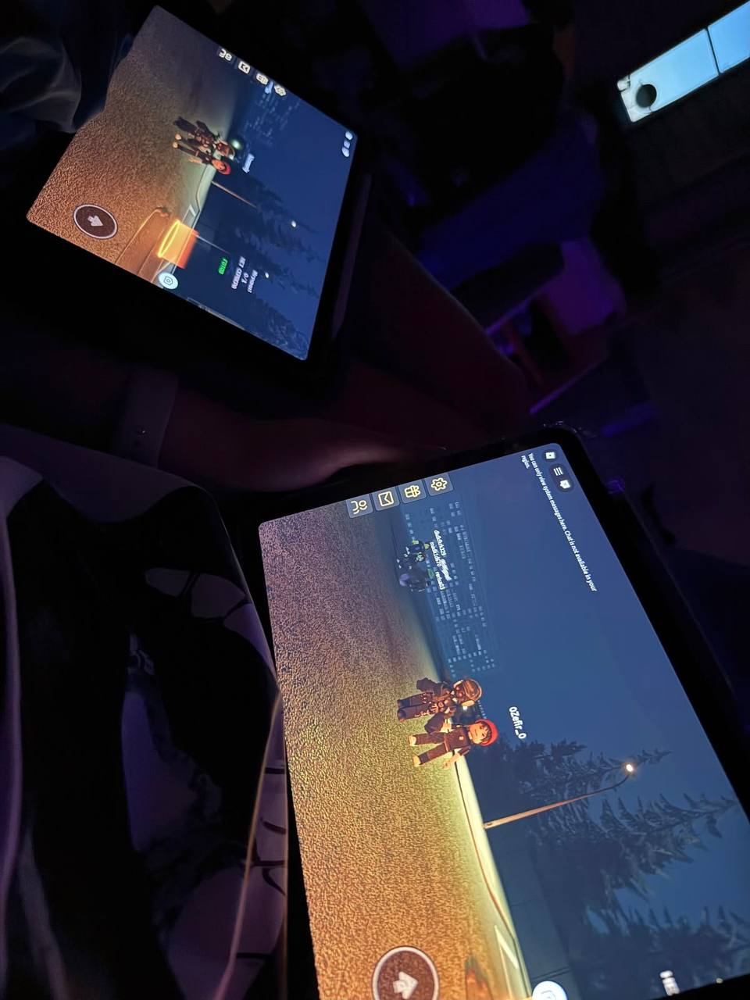
Захоплююсь атмосферними сюжетними іграми в жанрі хоррор, які тримають у напрузі.
Добірка художніх книжок, які залишили особливий емоційний відгук:
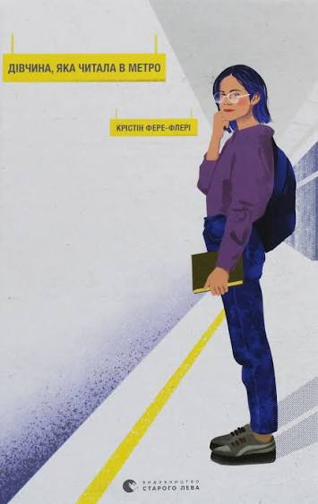
Добра історія про те, як випадкові книги здатні змінити долі людей.
Замовити книгу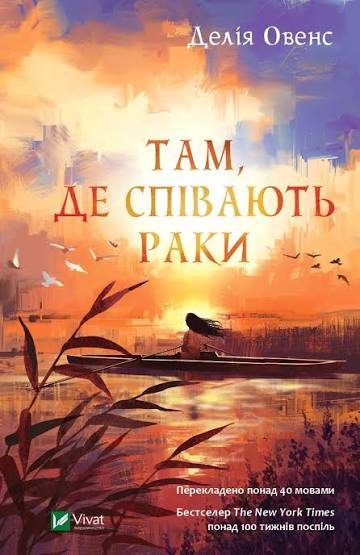
Неймовірна атмосфера дикої природи, таємниць та щирої юнацької любові.
Замовити книгу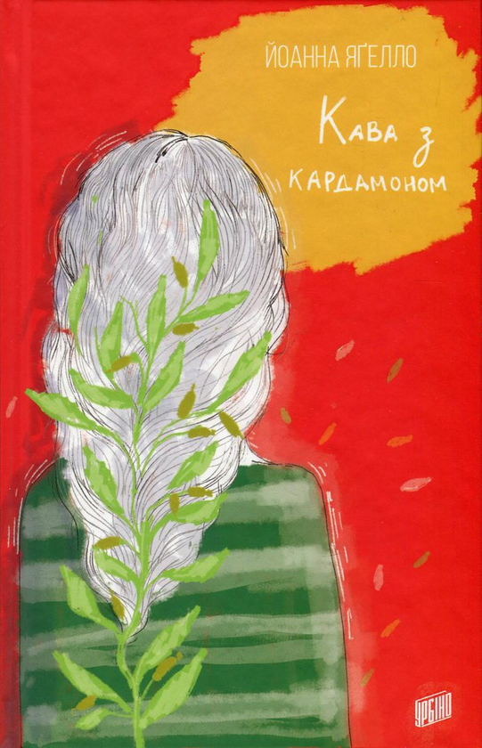
Чуттєвий історичний роман про глибокі почуття та львівську атмосферу.
Замовити книгу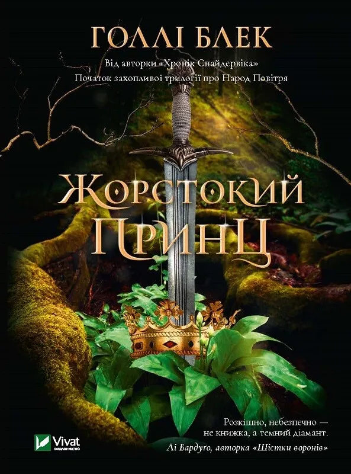
Захоплююча історія про смертну дівчину у світі підступних та небезпечних фейрі, повна інтриг і боротьби за владу.
Замовити книгу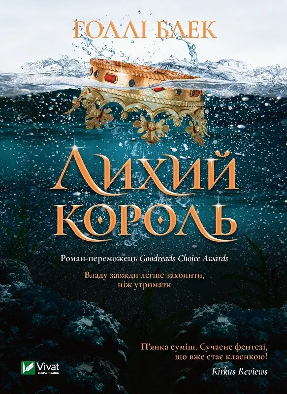
Продовження неймовірної історії про короля Елрігана та Джуд, де ставки стають ще вищими, а зради — болючішими.
Замовити книгуТреки, які створюють мій настрій та супроводжують мене щодня:
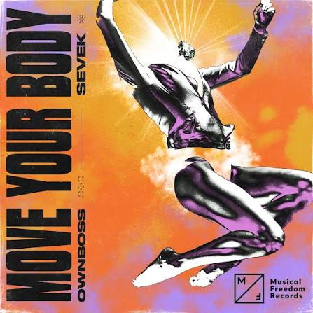
Кінематограф, який надихає, захоплює сюжетами та дарує емоції:
Епічна подорож та пригоди, що вражають своєю масштабністю й міфологією.
Я щира фанатка цієї магічної історії, яка супроводжувала мене з дитинства!

Американський детектив: геніальний консультант завдяки інтуїції розгадує найскладніші справи.
Моя спортивна історія:
За своє життя, на жаль, дуже не подорожувала, але справді люблю гуляти і досліджувати нові місця довкола.
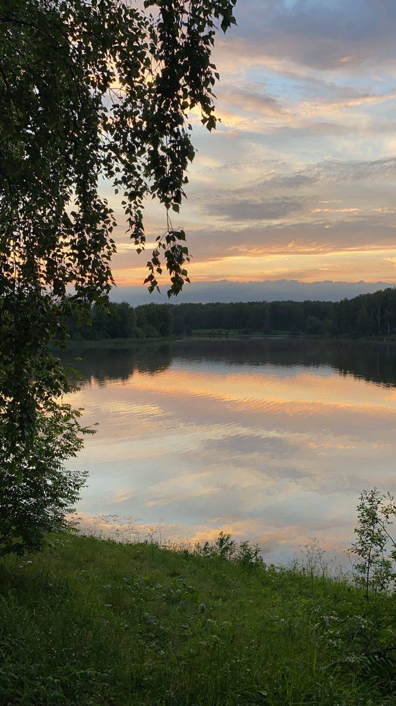
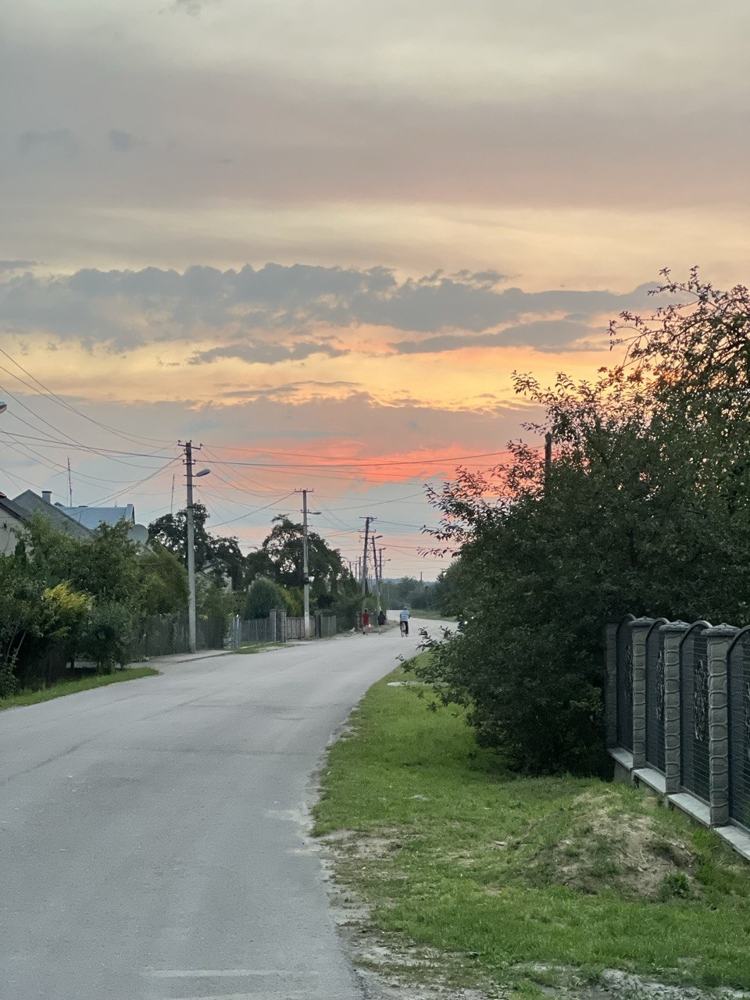
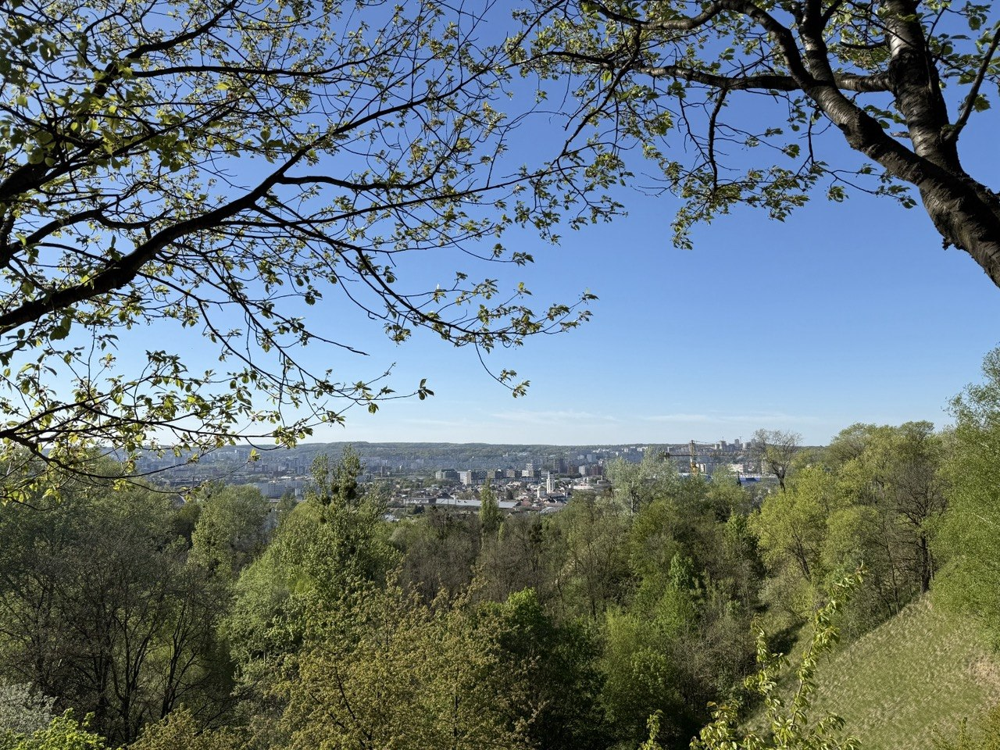
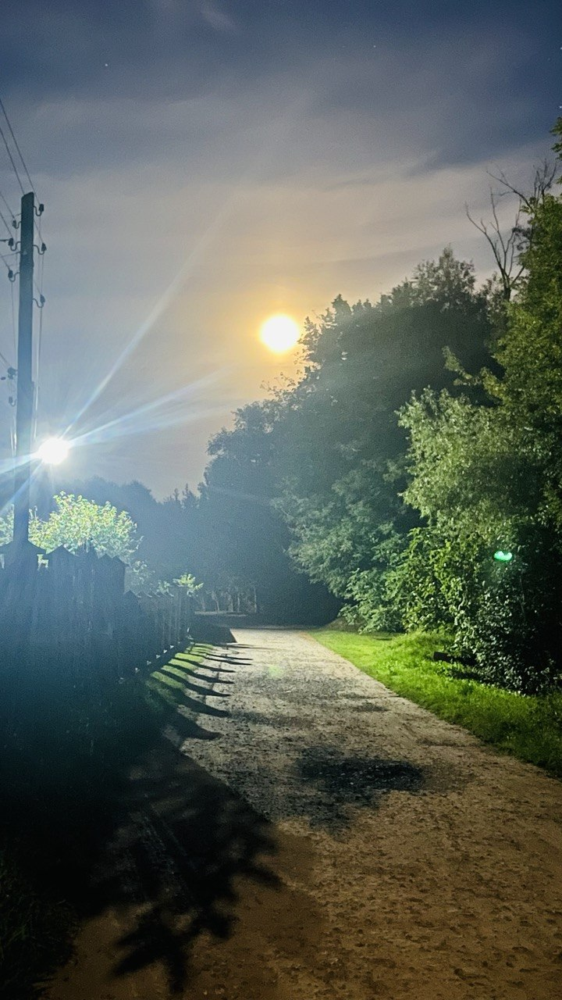
Мій практичний розроблений проєкт:
Опис: Публічний інтерактивний сайт для обробки статистичних даних. Користувач може ввести різну вибірку чисел, після чого отримує базові розрахунки (середнє арифметичне, медіану, розмах тощо).
Стек технологій: HTML5, CSS3, JavaScript .
Посилання: Відкрити сайт на GitHub Pages
Мої плани та орієнтири на найближчий час:
Кілька коротких фактів, які краще розкривають мою особистість:
«Жити — це найбільша рідкість у світі. Більшість людей просто існують, і не більше.»
«Логіка привеже вас від пункту А до пункту Б, а уява доведе куди завгодно.»
Маєте запитання чи пропозицію? Заповніть форму: